从这章开始，我们开始构建一个完全自定义界面的 App 小记，陌生的知识即将扑面而来，不要担心，接受新知识的时候大脑都会短路发热。你需要做的就是像看英文文章一样去试着理解这些代码的含义。
等你第二天醒来的时候，这些知识就再也不会陌生。
竖排是我们第一个要攻克的问题，这个问题可大可小，往大了讲就是实现一个可以竖着显示，竖着编辑，竖着选择的体验和横着完全一样的控件，小了说就是一个竖着显示文字的控件。
那么，在小记里，大的地方就是查看的界面，小的地方就是显示年份的这种小 Label。
在 iOS 里，UI 方面的控件都在一个叫 UIKit 的 Framework 里面，UIButton，UITextView，UITextField 等等，这些控件各有特性，但是都基于 UIView 衍生出来，需要你慢慢地挨个熟悉。
我们先来搞定 UILabel。
新建一个 Playground，这是 Swift 时代新引入的一个东西，可以实时查看代码的效果。你可以在 这里 获取完成后的 Playground。
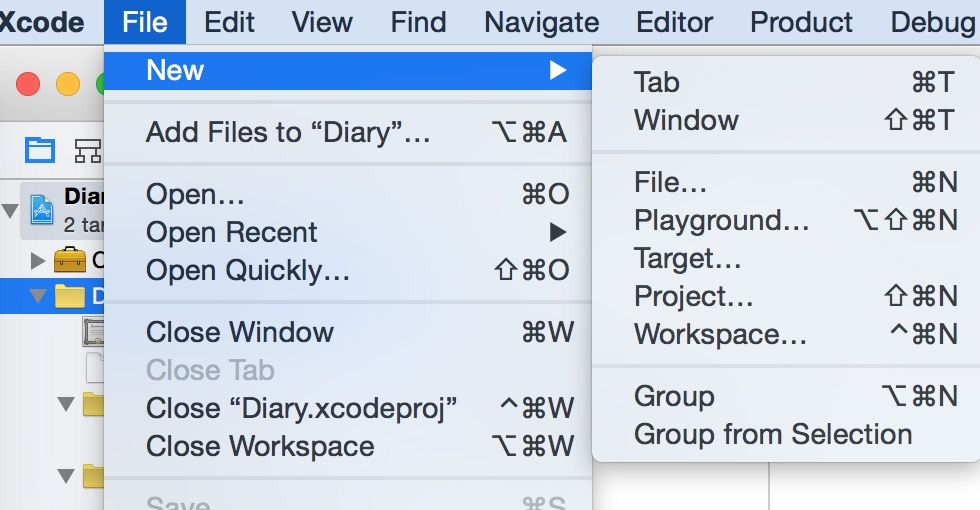
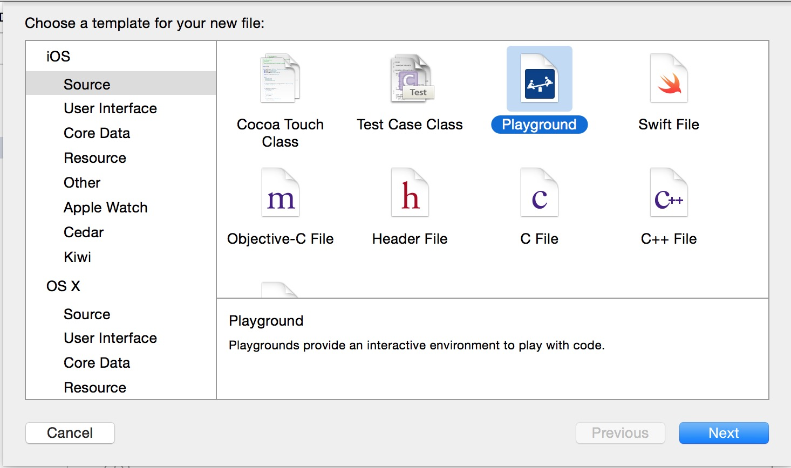
在里面输入如下代码
import UIKit
// 引用 UIKit 这样才能找得到 UILabel
var newLabel = UILabel(frame: CGRectMake(0, 0, 300, 100))
// 创建新的 UILabel，并且设置宽高为 100 和 300
newLabel.text = "HeyLabel"
// 设置 Label 的文字
newLabel.sizeToFit()
// 使 Label 的大小自动适应文字的大小
newLabel
这时候你就可以在右边点小眼睛查看到这个控件的外观
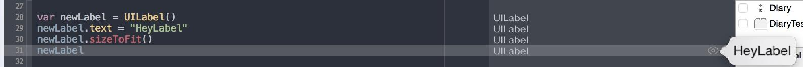
任重而道远，开心一下继续下面的任务，就是让它竖着显示。 这里我们采用的方法比较取巧
这样文字就会竖着显示了。
let fontSize: CGFloat = 22.0
let font = UIFont.systemFontOfSize(fontSize)
var newLabelTwo = UILabel(frame: CGRect(x: 0, y: 0, width: 20, height: 100))
newLabelTwo.text = "竖排文字"
newLabelTwo.lineBreakMode = NSLineBreakMode.ByCharWrapping
// 以字符为换行标准
newLabelTwo.numberOfLines = 0
为了实现这一点，我们要写一个函数，来计算竖着显示这些文字的大小是多少
func sizeHeightWithText(labelText: NSString,
fontSize: CGFloat,
textAttributes: [String : AnyObject]) -> CGRect {
return labelText.boundingRectWithSize(
CGSizeMake(fontSize, 480),
options: NSStringDrawingOptions.UsesLineFragmentOrigin,
attributes: textAttributes, context: nil)
}
NSString 这个类有一个自带的 boundingRectWithSize 方法，这个方法可以计算在给定的大小里填充进文字后的实际大小是多少，CGSizeMake(fontSize, 480) 这个参数给了一个宽度是文字的宽度，高度是 480 的长方形大小。
NSStringDrawingOptions.UsesLineFragmentOrigin 设定了文字的排列对齐的方式，textAttributes 里存放了文字的字体以及行高宽之类的信息。
那么我们修改下 Label 的面积大小。
let labelText = "竖排文字"
let fontSize: CGFloat = 22.0
let font = UIFont.systemFontOfSize(fontSize)
//创建 康熙字典体
let textAttributes: [String : AnyObject] =
[NSFontAttributeName: font]
// 定义一个字体样式，这里 [key: value] 的写法是一种字典映射
// 意思是 key 的值就是后面的 value，在这里的意思就是字体
//（NSFontAttributeName）使用康熙字典体
let labelSize = sizeHeightWithText(labelText,
fontSize: fontSize ,
textAttributes: textAttributes)
var newLabelTwo = UILabel(frame: labelSize)
newLabelTwo.attributedText = NSAttributedString(string:
labelText, attributes: textAttributes)
// 设置带有字体样式的文字
newLabelTwo.lineBreakMode = NSLineBreakMode.ByCharWrapping
// 以字符为换行标准
newLabelTwo.numberOfLines = 0
// 允许多行
这时，你的 newLabel 就完成了竖排的任务，你可以在 这里 获取到一个完整的示例代码
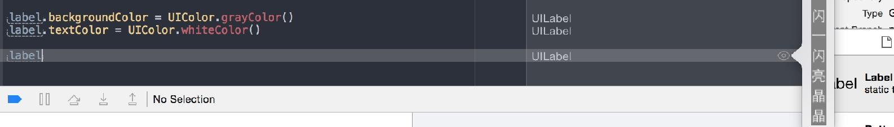
接下来，独立成一个单独的类方便重复使用，简称复用。
import UIKit
func sizeHeightWithText(labelText: NSString,
fontSize: CGFloat,
textAttributes: [String : AnyObject]) -> CGRect {
return labelText.boundingRectWithSize(
CGSizeMake(fontSize, 480),
options: NSStringDrawingOptions.
UsesLineFragmentOrigin,
attributes: textAttributes, context: nil)
}
class DiaryLabel: UILabel {
var textAttributes: [String : AnyObject]!
convenience init(fontname:String,
labelText:String,
fontSize : CGFloat,
lineHeight: CGFloat){
self.init(frame: CGRectZero)
let font = UIFont(name: fontname,
size: fontSize) as UIFont!
let paragraphStyle = NSMutableParagraphStyle()
paragraphStyle.lineSpacing = lineHeight
textAttributes = [NSFontAttributeName: font,
NSParagraphStyleAttributeName: paragraphStyle]
let labelSize = sizeHeightWithText(labelText,
fontSize: fontSize ,
textAttributes: textAttributes)
self.frame = CGRectMake(0, 0, labelSize.width,
labelSize.height)
self.attributedText = NSAttributedString(
string: labelText,
attributes: textAttributes)
self.lineBreakMode = NSLineBreakMode.ByCharWrapping
self.numberOfLines = 0
}
}
这种行为就叫做重构，是用来消磨时间，增加代码的可维护性，提升满足感的好活动。
我们还使用了神奇的 convenience init 方法，在这个方法里我们定义了 UILabel 被生成的时候可以接受的参数，像 fontname，labelText 等，都指定成在生成的时候边可以设定，而在这个方法里面，我们真正的生成是用 self.init(frame: CGRectZero) 这个方法，他调用了自己（即 UILabel）原本的 init(frame: CGRectZero) 方法来生成一个最原始的 UILabel，随后我们对其根据传入的参数进行了定制。
首先我们要添加两个字体，文悦字型 提供了我们需要的康熙字典体和文悦聚珍仿宋。
下载后把字体拖到 Xcode 的项目里。
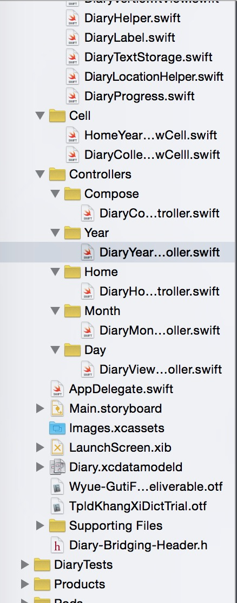
然后修改项目的配置文件 Supporting Files/Info.plist，右键在 Fonts provided by application 增加两行 String，分别为字体的文件名。
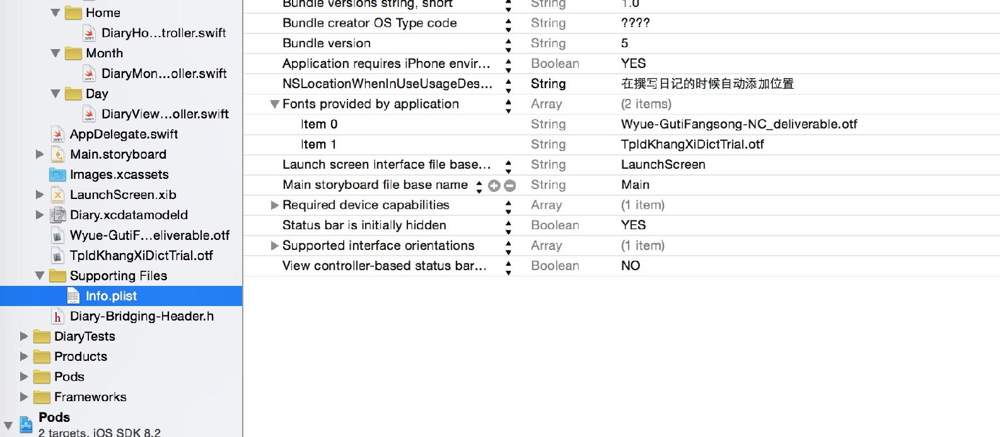
最后你需要知道这里两个字体在应用里的正式名字是什么，方法很简单，在 Finder 里面双击安装这个字体，然后你就能在 PostScript 看到它的名字。
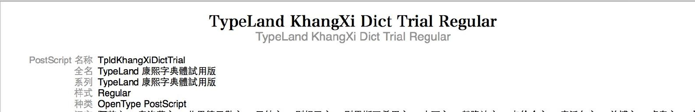
回顾年的设计，中间的年份并不是一成不变的，可能出现二零一六年，二零一七年。所以我使用 UICollectionView 在这里实现动态的显示。
UICollectionView 预设了一套非常先进的显示逻辑，这点你在 iOS 的相册里已经体验到了，当你拍摄了更多的相片，相片会按照日期排列好，你可以通过滑动查看不同的相片，这都是 UICollectionView 的功劳。
打开 Xcode 里的 Main.StoryBoard，选中默认 View Controller 按 Delete 删掉，然后在右下角拖进去 Collection View Controller
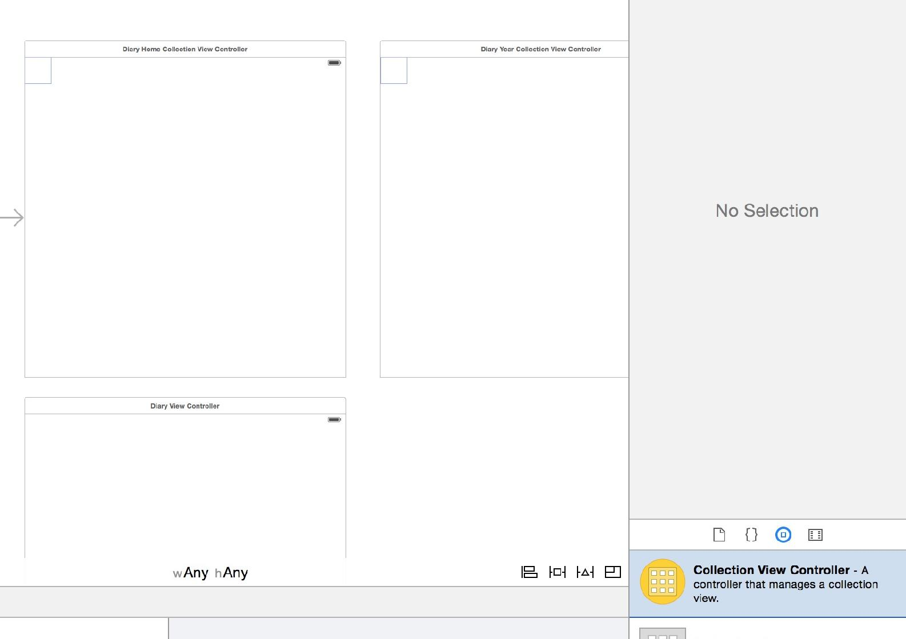
这个 Collection View Controller 默认并没有关联任何大脑。我们需要新建一个 HomeCollectionViewController 作为大脑。
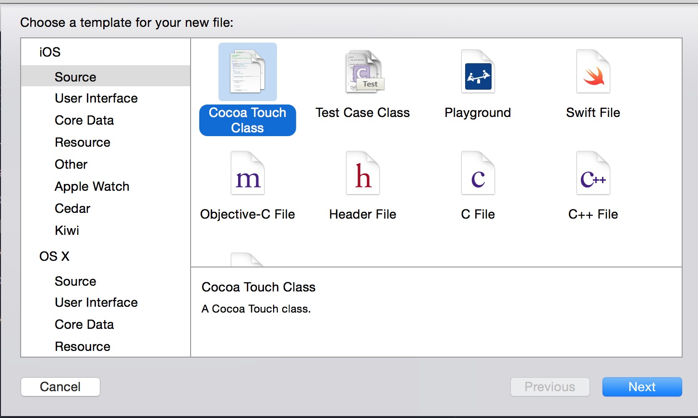
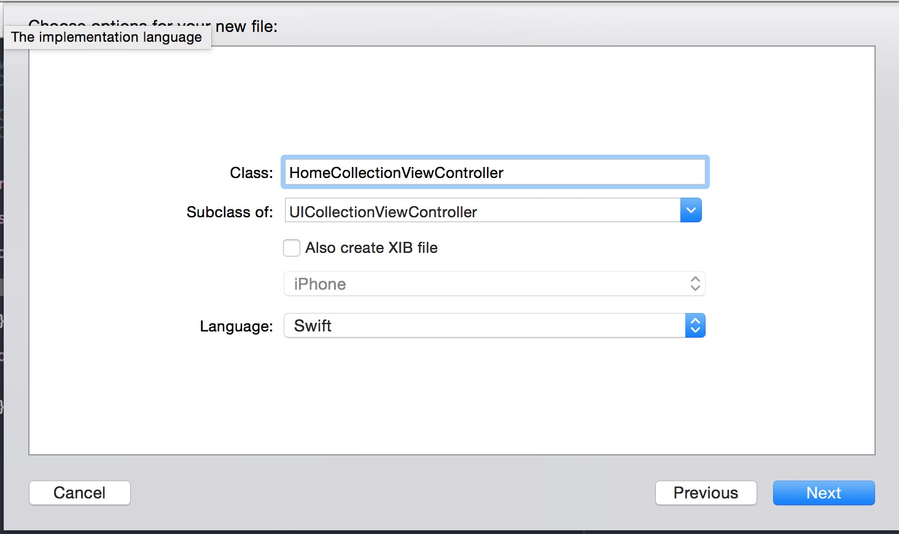
UICollectionViewController 是苹果为我们预先准备的大脑，它可以自动关联 UICollectionView，在 StoryBoard 里修改 Custom Class 为 HomeCollectionViewController 就可以使两者关联。
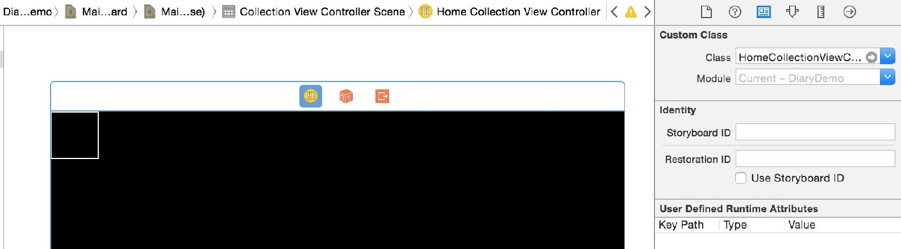
UICollectionView 有两个极为重要的协议，一个是 DataSource，它为 UICollectionView 提供数据。另一个是 Delegate，它为 UICollectionView 处理交互逻辑。
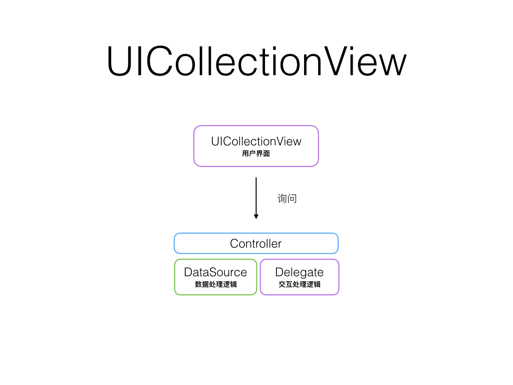
UICollectionViewController 继承自 UIViewController，以 UICollectionView 作为默认的 View，并且默认实现了 DataSource 和 Delegate 的协议。
在这里，DataSource 和 Delegate 会被自动设置为 HomeCollectionViewController，因为 HomeCollectionViewController 继承自 UICollectionViewController，这是 App 和我们的一个小约定。
UICollectionView 会问 DataSource 几个问题。
numberOfSectionsInCollectionView —— 显示几个栏目？numberOfItemsInSection —— 每个栏目里有几个项目？cellForItemAtIndexPath —— 项目需要长成什么样子？对于第一个问题，我们只显示年，所以在应答里返回 1 即可
override func numberOfSectionsInCollectionView
(collectionView: UICollectionView) -> Int {
return 1
}
对于第二个问题，我们此时只有 2015 年，所以可以如下作答
override func collectionView(
collectionView: UICollectionView,
numberOfItemsInSection section: Int) -> Int
{
return 1
}
而第三个问题就略微复杂一些，我们的回答模式如下，但是并不完整
override func collectionView(
collectionView: UICollectionView,
cellForItemAtIndexPath
indexPath: NSIndexPath
) -> HomeYearCollectionViewCell
{
let identifier = "HomeYearCollectionViewCell"
let cell = collectionView.
dequeueReusableCellWithReuseIdentifier(
identifier, forIndexPath: indexPath)
as! HomeYearCollectionViewCell
cell.textInt = 2015
cell.labelText = "二零一五 年"
return cell
}
因为我们还没有创建 HomeYearCollectionViewCell，Cell 是一种针对数据的模版。在 App 里有很多样式相同，但是数据不同的界面，例如聊天界面的气泡，气泡的样式都是一样的，但是文字内容不同。
而气泡就是一个 Cell，我们需要做的就是把数据填充进去。
先创建一个 HomeYearCollectionViewCell
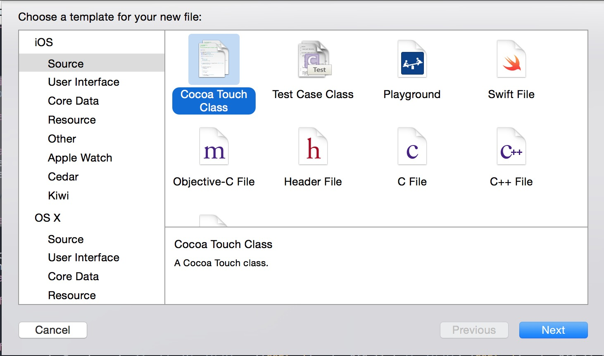
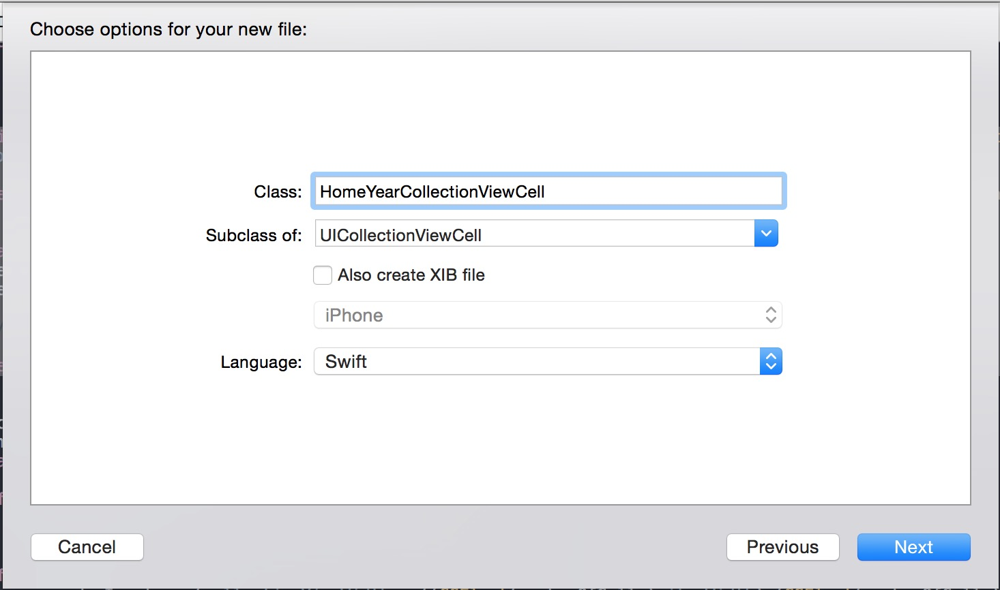
在 HomeYearCollectionViewCell 里，我们如下编写
var textLabel: DiaryLabel!
var textInt: Int = 0
var labelText: String = "" {
didSet {
self.textLabel.updateText(labelText)
}
}
override func awakeFromNib() {
// 界面载入到内存
self.textLabel = DiaryLabel(
fontname: "TpldKhangXiDictTrial",
labelText: labelText,
fontSize: 16.0,
lineHeight: 5.0)
self.addSubview(textLabel)
}
override func layoutSubviews() {
super.layoutSubviews() // 对子 View 进行布局
self.textLabel.center =
CGPointMake(itemWidth/2.0, 150.0/2.0)
}
流程很简单，awakeFromNib 的时候，添加了一个 textLabel，当更新 labelText 的时候，通过 didSet 事件来用 updateText 方法更新文字以重新计算 Label 的大小。 在最终显示前，通过 layoutSubviews 来重新计算 textLabel 的中心。
awakeFromNib layoutSubviews 这些是哪里来的以及我是怎么知道它们的用法的呢？
这些当然都是要你从不停地看各种枯燥无味的基本文档中练出来，抽时间详细的阅读一遍 Apple 的文档是一件大有裨益的事情。
textInt 存储了年份的整数形式。
完成了我们的 Cell 后，回到我们的 Storyboard 里找到刚才的 UICollectionViewController，点击里面的小正方形，把 Custom Class 设置成 HomeYearCollectionViewCell
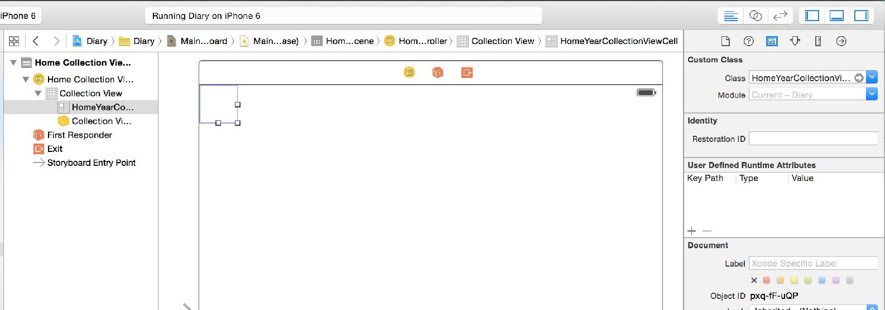
因为在上面我们利用了 dequeueReusableCellWithReuseIdentifier 来通过 Identifier 获取 Cell，所以在这里我们也需要把 Identifier 也设置成 HomeYearCollectionViewCell
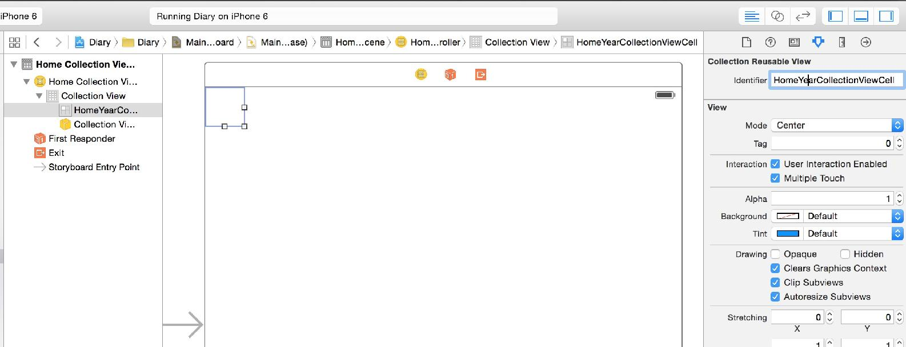
在 App 里有些参数是需要反复使用的，例如上面的 Cell 在计算的时候，写了很多临时的数字，那么明显存在某个地方可以方便统一管理，在 AppDelegate 的最顶端，我放置了这些常量
let itemHeight: CGFloat = 150.0
// Cell 的高度
let itemWidth: CGFloat = 60
// Cell 的宽度
let collectionViewWidth = itemWidth * 3
//同时显示三个 Cell 时候
那么像 self.textLabel.center = CGPointMake(30/2.0, 150.0/2.0) 这种计算，就可以写成 self.textLabel.center = CGPointMake(itemWidth/2.0, itemHeight/2.0)
生活顿时容易多了。
但是到这里，CollectionView 还不知道用什么样的布局显示出来这些 Cell。
So Go For The Last Question
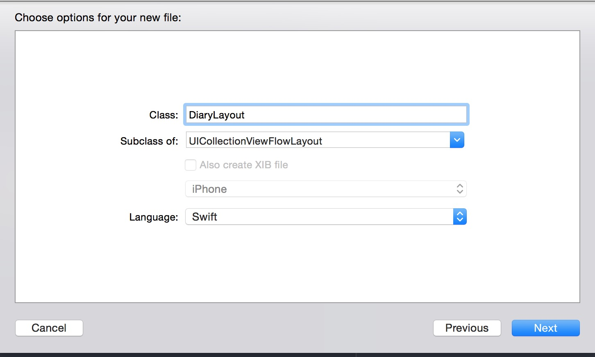
class DiaryLayout: UICollectionViewFlowLayout {
override func prepareLayout() {
super.prepareLayout() //准备布局
let itemSize = CGSizeMake(itemWidth,itemHeight)
self.itemSize = itemSize
self.minimumInteritemSpacing = 0.0
self.minimumLineSpacing = 0
}
}
这几个就是如字面意思了，Cell 的大小设置为 宽度 30.0 高度 150.0，item 之间不留空，Cell 的行之间，空 30。
在 ViewDidLoad 里面，把 Layout 信息给 CollectionView
var yearLayout = DiaryLayout()
yearLayout.scrollDirection =
UICollectionViewScrollDirection.Horizontal
self.collectionView?.setCollectionViewLayout(
yearLayout, animated: false)
这时候运行一下，你就可以看到屏幕显示着 二零一五年 了。
但是这个年并不是居中的，怎么居中呢？
我的思路是把 collectionView 按照三个 Cell 的宽度和高度重置 frame 然后给 collectionView 做一下 inset。
在 ViewDidLoad 里面
self.collectionView!.frame = CGRect(x:0, y:0,
width: collectionViewWidth, height: itemHeight)
self.collectionView!.center = CGPoint(
x: self.view.frame.size.width/2.0,
y: self.view.frame.size.height/2.0)
collectionView 有个方便的方法可以设置 inset
func collectionView(collectionView: UICollectionView,
layout collectionViewLayout: UICollectionViewLayout,
insetForSectionAtIndex section: Int) -> UIEdgeInsets {
var leftRightMagrin = (collectionViewWidth - itemWidth)/2
return UIEdgeInsetsMake(0,
leftRightMagrin, 0, leftRightMagrin)
}
最后，按下 Xcode 左上角的播放键，就可以运行你的 App 了。
你可以在 Github 找到本章节的完成代码。